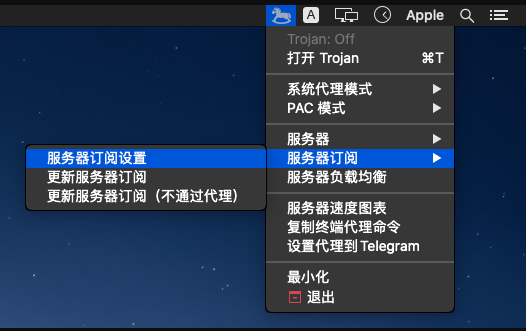
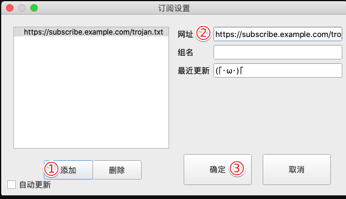
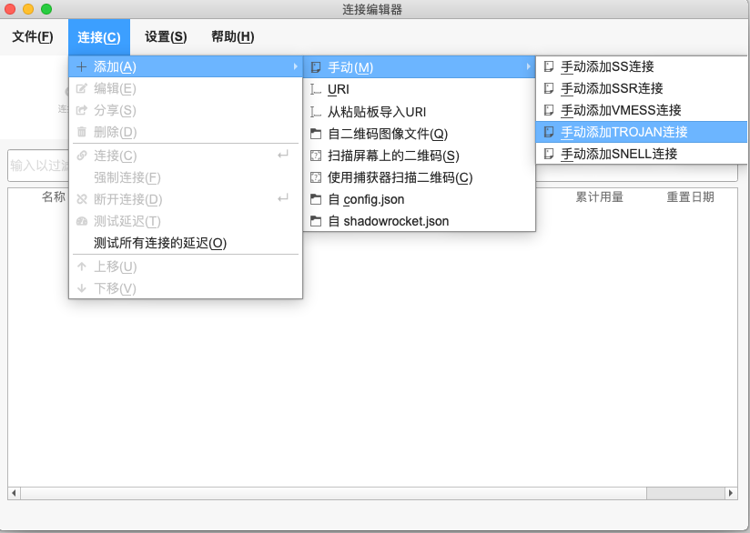
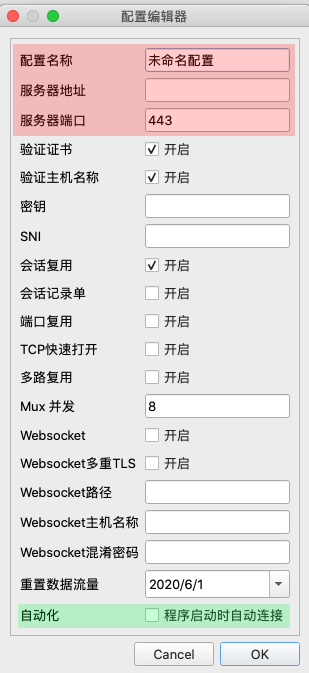

mac使用教程¶
一、客户端下载地址：https://wwa.lanzoui.com/ivYudsr3lva
二、 软件如果无法打开，请参照如下截图修改系统权限，允许软件打开


三、设置教程
1、如果点击连接时时闪退/报错/没有反应，请确认没有其他程序占用客户端的监听监听端口
2、macOS 第一次打开会提示无法验证开发者，请在 访达 > 应用程序中找到 Trojan-QT5 ，通过 右键选择打开 > 再次右键选择打开 即可开启程序
3、通过订阅方式添加节点
右键点击系统通知区域的客户端图标 打开菜单。
依次点击 服务器订阅 > 服务器订阅设置 ，打开订阅管理窗口。
将订阅链接粘贴到网址中，替换掉默认生成的链接
点击确定
打开客户端菜单，点击 服务器订阅 > 更新服务器订阅(不通过代理)，等待节点列表出现。
选中一个节点，点击顶部的连接按钮 即可连接
4、手动方式添加节点（如果订阅失败的话尝试此方法）
打开客户端，点击 连接(C) > 添加(A) > 手动(M) > 手动添加 TROJAN 连接，在弹出的窗口中填写信息
- 配置名称：随意填写一个备注名称（例如服务器位置）
- 服务器地址：填写服务器节点对应的地址
- 服务器端口：填写对应的服务器端口
- 密码：填写对应的密码
- SNI：填写邮件里对应的sni地址
勾选底部的 程序启动时自动连接 会在打开客户端时自动连接该节点
